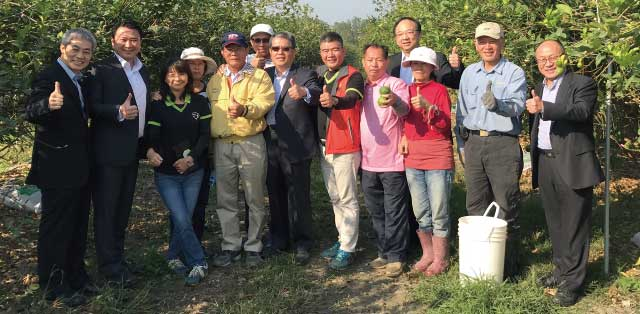
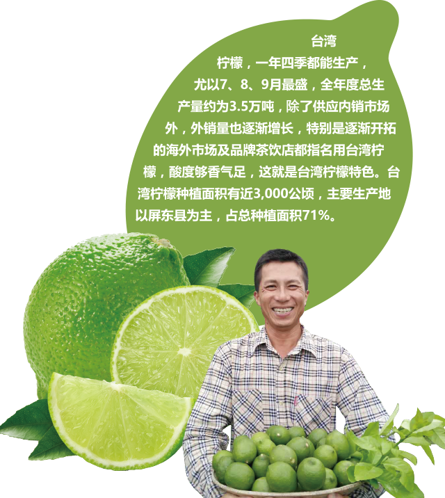

为了推出健康的柠檬饮，金色大地特别派出食安中心专业人员驻点屏东生产基地，经加工、抽检等多道工序及检测程序，保证100%原汁与安全。总计在2016年共收购了柠檬鲜果超过1,100吨，以每颗柠檬约0.1公斤、长约7厘米来计算，共使用770,000米长的柠檬数量，对比高度509米的台北101大楼，购买柠檬数量共超过1,512座的台北101大楼。这样巨大的数量，代表的是营销台湾屏东柠檬的新记录，将为屏东柠檬营销写下全新历史，更让消费者可以喝到来自屏东安全生产的柠檬饮，这亦是民间业者与政府部门结合推动农产品的全新模式。

结合青年农民、台湾农业国际发展公司、屏东县政府、农委会，共创多赢新局面。为满足2017年的产销需求，金色大地结合产地龙泉农业生技加工生产合作社、永大食品公司共同形成「台湾柠檬安全生产团队」，利用晚上时间办理合作生产的倡导会，在积极的运作之下，截至2017年的2月10日，共有206位农民签约参与合作、面积达到176公顷左右，预计将生产近3600吨的柠檬鲜果。为了中长期的发展，金色大地总经理吕政璋特别向台农发公司董事长陈郁然提出合作扩大柠檬安全生产面积，预计在2018年再扩大100公顷，将由台农发公司协助土地，并共同找寻青年农民返乡，创造更多工作机会。
2017年将采购3,600吨柠檬、出口近1,200吨柠檬原汁。
借助台湾、内地德克士的门店在2016年第四季所推出的柠檬饮，创造了快餐业界的明星产品，特别是现在消费者以健康为导向的需求之下，不仅吃炸鸡喝柠檬可以解油腻，更有酸碱中和之效，让身体没有负担，同时也正向带动与引领消费者食用德克士炸鸡。因此，在2017年金色大地和德克士再结合深化后，将继续采购屏东柠檬原汁1,200吨，不仅除了在德克士全面推动柠檬系列饮品，更将推出冷藏柠檬饮品，同时将透过便利店进行全面销售，预估将带动台湾的柠檬产业，也将帮助屏东农业走出去，这将会是营销台湾柠檬重要的里程碑，更是共荣、共好、共赢的全新营销模式。
